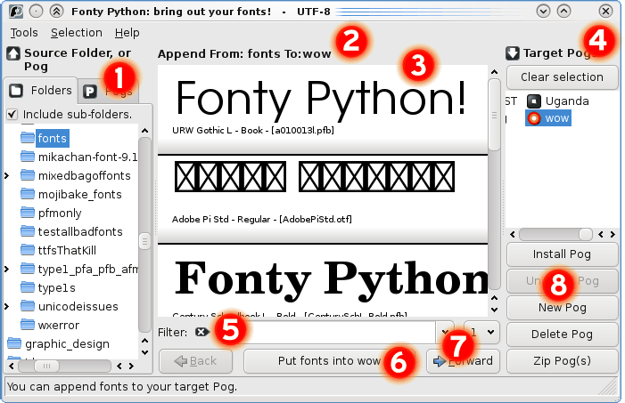
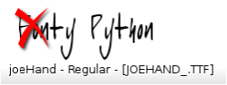

|
FontyPython is a font viewer and manager for Gnu/Linux. Use it to view, gather and manage fonts. You can install and uninstall fonts to your home fonts folder for temporary use in other apps.
The layout | The Menus | Shortcuts | Tips | Localization | Bugs | Licence
Ye olde Basic Idea
You visually gather fonts into "Pogs". You then install the Pog, and all its fonts will be available to other apps. When you finish your work, uninstall the Pog.
I just tumbled onto the word "Pog", it comes from the middle of "typography". It means "collection" or "group" or "bunch" or "box" or "case" or "stack" or "pile" — you get the picture.
Your fonts never move from where they live, neither are copies made; only links to the original files are used to install the fonts into your home .fonts directory.
For example, you might have a Pog called "logoZoo" into which you place all the fonts needed to design a logo for a Zoo. After that, when you need to work with them, you simply install the "logoZoo" Pog and start your design app. All those fonts will now appear in Inkscape or The Gimp, and other apps. Do your work as normal, and forget about fonts. When you are done designing, you uninstall "logoZoo" and all those fonts go away. The links to the original files are removed from your home .fonts directory, effectively uninstalling each font.
Fonty is also great for just looking at fonts, wherever they are on your computer, without having to install them first. She also has a command line, allowing very quick use. You can install/remove pogs without having to start the entire gui, which is neat.
Home dot fonts
In your home directory there is a hidden directory named ".fonts". The dot makes it hidden. In there you will find font files of various kinds. Whatever is listed in that directory is a font that your system can use. It's not as simple as this because on GNU/Linux there are other places where fonts are also installed, but it's a handy place to work. You should never need to go into this directory so there's no reason to worry about it.
Latest News
- (Sept 2009) You can now zip pog(s). This puts all those fonts into a zip file for convenient distribution.
- (June 2009) There is an "Include sub-folders" check box now. See also the command-line option "-A"
- (June 2009) New keyboard shortcuts. Ctrl+LeftArrow and Ctrl+RightArrow will step through your fonts.
- (June 2009) Multiple Pog selection. Remove, Install or Uninstall many Pogs at once.

Layout

The interface works from left to right. You select a Source on the far left, then you select fonts from the middle section and finally you choose a Target "Pog" where you want to store them.

|
Source of fonts.
You can choose a folder or another Pog as the Source, simply choose the appropriate tab.
It's quite nice to get fonts out of another Pog sometimes (it's quicker than trying to find them on a drive somewhere), so Pogs can be Sources too — don't let this confuse you!
Keep your eyes on the label at 2 to see what the current selected Source is.
Sub-Folders: Above the Folders is a checkbox to include fonts in sub-folders under your chosen folder. You can deal with many fonts at once in this way — but beware the trade-off of speed and stability.
|
 |
Information area.
This section informs you about what is selected in the Source and Target portions of the interface. Along with the status bar, it keeps you informed about what you can and cannot do at any time.
|
 |
The font view.
The fonts in the folder or Pog you chose on the left will show here.
Please note: An error marker may appear instead of the expected font glyphs. These fonts either cannot be opened (for whatever reason) or Fonty cannot draw them. You can still select these 'bad' fonts, place them into Pogs and then install them. The reason for this is that Fonty Python is not all that good at drawing fonts (it's a long story) but other apps like Inkscape and The Gimp work just fine. So, if you know you need a font and Fonty says it's bad, just ignore the error message and select it like any other font.
Tip: You can change the size of the fonts with Ctrl + mouse wheel (up/down).
This section has various behaviours, depending on what you have selected:
-
You have selected a Source (Pog or Folder) and a Target Pog

This will let you tick fonts and then store them in the target Pog.
-
You have selected a Source Folder (or a Pog) only
This will not let you tick anything, you can only look.
-
You have selected a Source Pog only

This will let you cross-out fonts that you want to remove from the Pog you are looking at.
-
Inactive fonts

This greyed-out font indicates that it's already in the Target Pog, so you can't select it.
|
|
|
Target Pogs.

|
These icons indicate which are currently installed and which are not.
- You cannot use an installed Pog as a target.
- You choose a target Pog by clicking one (on the right).
- By holding ctrl you can select many pogs at once.
- The "Clear Selection" button will clear your entire selection.
|
|
 |
The filter.
This is the "filter". You can type partial words here and the list of fonts will change to reflect the search. For example, if you only want the italic fonts, then type italic (And press ENTER)
When you want all the fonts again, clear the box and press ENTER.
Tip: If you want to search for bold or italic (i.e fonts with either term) then type in bold | italic That line (|) is the key near ENTER, above the backslash (\) character on a US-English keyboard. It means "OR" so: "bold OR italic" is what you are saying to the filter.
NOTE: There's a bug I can't find — If you are not seeing any fonts, be sure to clear your filter and press enter; you may have to do it twice.
|
 |
The action button.
This is the main action button. It will change its functionality as you select various combinations. The text of the button ought to give a clear indication of what it will do. Read it in conjunction with the Info area and the status bar.
|
|
Navigation.
These controls allow you to navigate between "pages" of fonts. You can also choose any page from the pull-down. Please go to Tools->Settings (or hit Ctrl+S — for English locales) where you can change the number of fonts in a page. I use the paged approach to reduce the memory demands of the app.
|
|
Pog actions.
The buttons in this section all act upon the currently selected target Pog(s). You can variously delete, install, uninstall and zip the selected Pog(s). You can also create new Pogs from here.
|
Go to top
Menu items
- Tools menu
- Settings: Access the settings for the font view. Shortcuts: Ctrl+S or middle-click on the font view.
- Check Fonts: Choose a folder and scan for bad fonts which are then noted to prevent crashing Fonty in the future. Use this if your head is tired of the wall/desktop.
- Purge Pog: The Pog you are currently looking at may have yellow items which indicate fonts that are not there anymore. Use purge to remove them. A Pog contains a list of fonts paths. If a font is moved on the disk, say it's renamed or deleted, then the path in the Pog will point to a font that is not there anymore.
- Exit: Guess :)
- Selection menu
- Select ALL the source fonts: While only a few fonts are shown in a page at a time, there may be thousands in the selected source. This will select all those fonts in one go.
- Clear ENTIRE selection: Will clear any selection.
Go to top
Shortcut keys
- If shortcut keys don't work, click in the filter text box. This seems to kick them back to life. Don't ask me what's going on....
- Esc key will close your app (and help etc.) quickly.
- Ctrl+LeftArrow and Ctrl+RightArrow will step through fonts like the Next and Previous buttons do.
- Middle-click (the wheel-button) in the font view (position 3 above) will open the Settings screen (like Ctrl+S does)
- Ctrl + Mouse wheel up/down will increase/decrease the size of your font previews quickly.
Go to top
Handy tips
- Try to use Fonty from the command-line (from a console). It's easy, simply type:
fontypython --help
- Pog files are merely text files. They are very, very simple and this was intentional. Here are some things you can do with them:
Go to top
Localization tips
- If localization is not working it could be that there is no translation for your language yet, it can also be a problem with missing packages in your distro.
This is what I installed on my system (Kubuntu 7.10 as of December 2007) while I was developing:
- language-support-fr
- language-support-en
- language-pack-gnome-fr This one is very important, it has many stock translations for GTK.
(Replace the last two letters with your own language code.)
- ENCODING TIP:
Check your LANG variable. Open a console and type: echo $LANG
If it reports "C" or "POSIX" or it's blank then you will be running under ANSI (ASCII) encoding only. This means that unusually named fonts and pogs will likely be invisible to you, function badly, or cause errors. I am putting out fires as fast as I can, but these bugs are hard to find.
To see what other encodings you could be using, type:locale -a
You should see a list of locales. If you see one ending in utf8 that looks like it fits your language, then change your system to use it. You should do this via your system-settings gui, but you can do it temporarily like this:
LANG=xx_YY.encoding Where xx_YY and encoding are replaced by you. After that, start Fonty again.
- If you want to help translate, please contact us via the fontypython list: fontypython@googlegroups.com
Go to top
Fonty bugs
- Fatal crashes and Dangerous Fonts: Some fonts stick in Fonty's throat and crash her. If you wait a moment, a window should appear and tell you which font is to blame. You should move that font entirely away from where it is. Start Fonty again to resume. If you are stuck, go into your .fontypython folder and open the file named 'lastFontBeforeSegfault', that will be the culprit!
- Check Fonts: I've added a new tool to the Tools menu that will let you choose a folder (and it will go through all the sub-folders too) of fonts for checking. Any fonts that are likely to kill Fonty will be recorded in your ~/.fontypython folder in a file named 'segfonts'. After you do this, you can visit those folders in Fonty and it will display those fonts in yellow. If you find that Fonty is crashing too often, then use this tool!
There is also a command line to the same tool (fontypython -c /some/folder). Please check the command-line help.
- If you get errors post a report on https://savannah.nongnu.org/bugs/?group=fontypython. Please run Fonty from the command line so that you can copy the error displayed (if any).
- When Fonty starts-up it checks your Pog files (in your home folder under .fontypython). If there are any pogs that cannot be read for whatever reason, then they are renamed to .badpog. You should go in there and do some sleuthing.
- As Fonty reads font files here and there, it keeps a list of the fonts it could not open. It's in the .fontypython folder. Open "badfiles" in a text editor if you want to see them.
Go to top
Licence
Fonty Python is Copyright (C) 2006, 2007, 2008, 2009 Donn.C.Ingle.
This file is part of Fonty Python.
Fonty Python is free software: you can redistribute it and/or modify
it under the terms of the GNU General Public License as published by
the Free Software Foundation, either version 3 of the License, or
(at your option) any later version.
Fonty Python is distributed in the hope that it will be useful,
but WITHOUT ANY WARRANTY; without even the implied warranty of
MERCHANTABIliTY or FITNESS FOR A PARTICULAR PURPOSE. See the
GNU General Public License for more details.
You should have received a copy of the GNU General Public License
along with Fonty Python. If not, see http://www.gnu.org/licenses/
Go to top
|